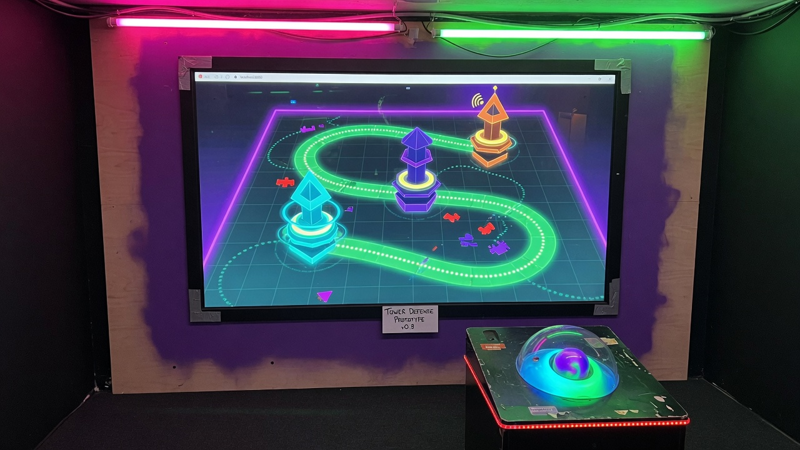

Tower defense prototype. v6.1. One player.
Build: tower-defense-v6.1.html
No authentic gameplay screenshot or footage yet. Poster frames stay on the floor card. Owner can drop a live playfield capture later.
Single-player. Place towers, spend the v6.1 economy. No multiplayer.
Extra poster frames are just art, not proof of the current build.
Comments / profiles / saves — not built. Version history will live here.